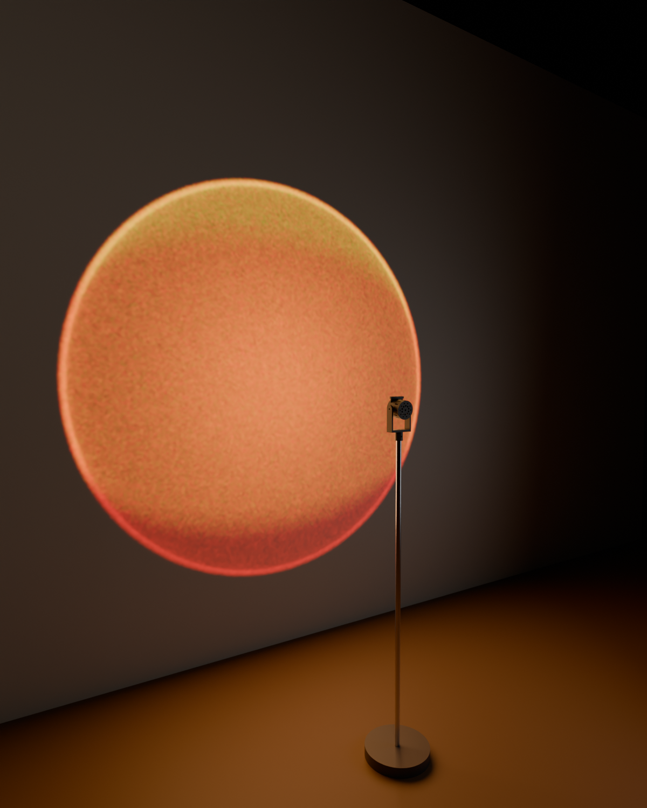
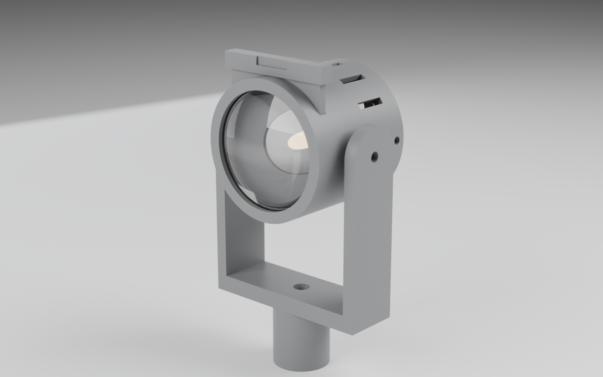
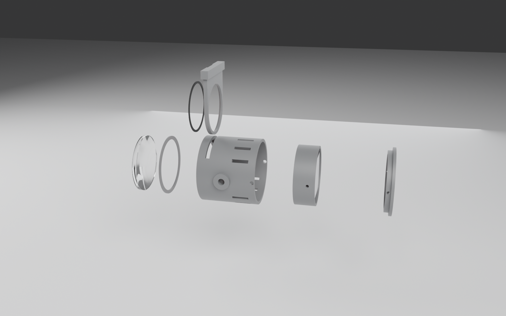
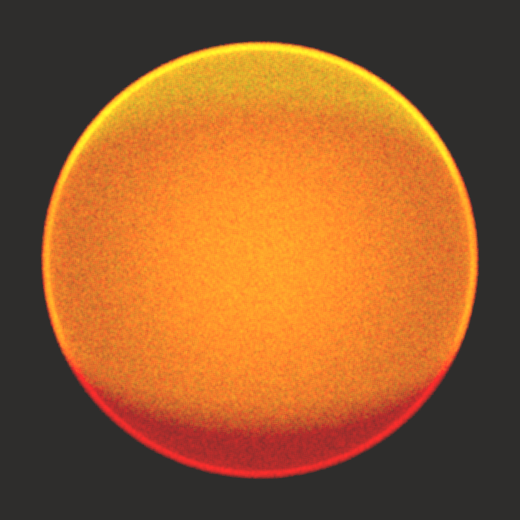
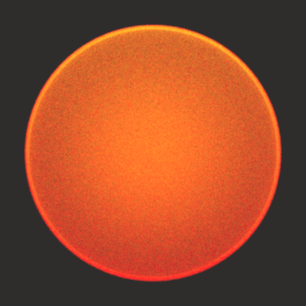
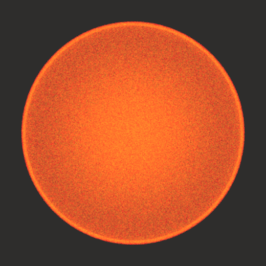
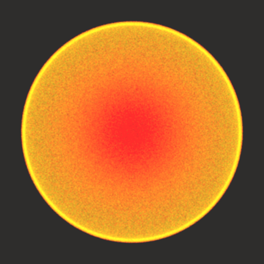
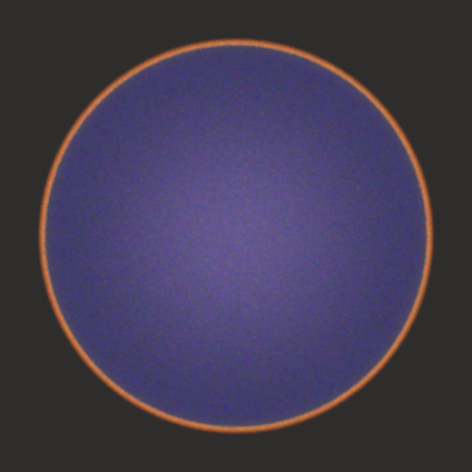
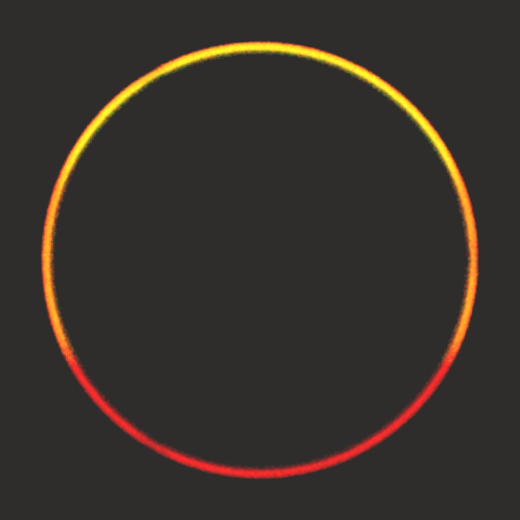

← interactive 3D viewer (Kotlin/Wasm)
A printable light-projector floor lamp inspired by Mandalaki's Halo Edition: a sharp ~2 m disc of sunset light on the wall from a 3 W LED, a Ø50 f100 lens and stacked theatre gels. About 942 kr in parts (bench-test kit 628 kr).



Mandalaki: "We isolate frequencies of the white light, and we cut the frequencies we don't want … We also control the blurs … according to the angle of refraction" (Dezeen). Here is the same idea built from parts:






MASK_KIND=1)Cutting the gels: trace the printed mask onto the gel, cut Ø44 discs, then cut straight edges with a ruler. Stack yellow → orange → red (red toward the lens). Rotate the cartridge 180° to put the "horizon" on top. Extra: red gradient overlay to print and add on top of a yellow gel.
| File | Orientation | Supports | Size | Notes |
|---|---|---|---|---|
| halo-housing.stl | Lip face down | none | 63.4 × 57.4 × 49.8 mm · ≤28 g | 2 × M4 heat-set inserts in the pivot bosses (Ø5.6 holes) |
| halo-carriage.stl | Front wall down | none | 51.7 × 51.7 × 18 mm · ≤11.5 g | 1 × M3 insert in the lock boss (Ø4.0); heatsink pocket 33 × 33 × 15 |
| halo-rear-cap.stl | Flange down | none | 57.4 × 57.4 × 6.4 mm · ≤9.1 g | cable hole + 20 vents |
| halo-cartridge.stl | Recess down | none | 50 × 58.7 × 6.2 mm · ≤5.6 g | holds a Ø44 filter stack; slides in from the top |
| halo-mask.stl | Flat | none | 43.7 × 43.7 × 0.8 mm · ≤0.2 g | black PETG, 0.8 mm: disc (sun) or ring (eclipse) |
| halo-lens-ring.stl | Flat | none | 52.1 × 52.1 × 1.2 mm · ≤0.7 g | spacer cartridge → lens. Biconvex lens: set RING_T = 4.3 |
| halo-yoke.stl | On its side | none | 74.2 × 24 × 107.7 mm · ≤45.3 g | 1 × M3 insert for the tube clamp; Ø7 cable hole |
| halo-base.stl | Upside down (top plate on bed) | none | 200 × 200 × 32 mm · ≤196 g | Ø200: fits the P1S bed; fill with ~1.4 kg dry sand |
| halo-base-lid.stl | Flat | none | 194.5 × 194.7 × 2.4 mm · ≤86.3 g | glue under the base after filling |
| halo-dimmer-box.stl | Floor down | none | 64 × 36 × 26 mm · ≤21.7 g | pot through the floor (used upside down) · DC jack · cable exit |
| halo-dimmer-lid.stl | Plate down | none | 64 × 36 × 3.5 mm · ≤6.1 g | 4 × M3×8 |
Near the LED, PETG (Tg ≈ 80 °C) or ASA. The 33 × 33 × 15 heatsink keeps the 3 W LED around 50 °C. Heat-set inserts: iron at ~220 °C, press straight.
All parameters (lens Ø/f, tube Ø, base size …) can be changed live in the viewer. For exact STLs at other sizes, run halo_lamp.py.
| Group | Part | Price | Qty | Bench kit | Note |
|---|---|---|---|---|---|
| Light | LED 3W 700mA varmvit 3000K på kort (Ø20 star) | 19 kr | 1 | ✓ | single small die = sharp disc; warm 3000K is the sunset base colour |
| Light | Kylfläns 33x33x15mm 9.5K/W | 14.5 kr | 1 | ✓ | exactly the HS_W/HS_H pocket in the carriage |
| Light | Värmeledande folie 20x130x1.0mm 6W/mK | 74 kr | 1 | ✓ | cut a 20 mm square: star -> heatsink |
| Light | LED-drivare step-down 4-30V / 330-660mA (EKM033) | 49 kr | 1 | ✓ | bridge both jumpers = 660 mA; DIM pin + 10k pot = smooth 0-100 % dimming |
| Light | Luxorparts switchad nätadapter 12 V DC 12 W (5.5/2.1) | 199.9 kr | 1 | ✓ | 12 V like the original; any 5-24 V DC supply >= 6 W also works |
| Light | DC-jack 2.1x5.5 chassi rund (9 mm hål) | 28 kr | 1 | ✓ | power-in on the dimmer box (JACK_HOLE 9.2) |
| Dimmer | Potentiometer 10k lin PC16SH 6 mm axel | 24 kr | 1 | ends to the EKM033 2.5V ref + GND, wiper to DIM | |
| Dimmer | Ratt svart ø24x14mm (6 mm räfflad) | 45 kr | 1 | dimmer knob | |
| Dimmer | Kabel 2x0.5mm² Cu röd/svart 10 m | 72 kr | 1 | dimmer box -> base -> up the tube -> LED (about 2.5 m used) | |
| Optics | Alega konvex glaslins Ø50 mm, f = 100 mm (välj 100 MM) | 25 kr | 1 | ✓ | Swedish stock lens. Shape not stated (likely biconvex): if so set RING_T = 4.3 so the rear bulge clears the filter |
| Optics | Lee 101 Yellow, ark 25x122 cm | 73 kr | 1 | ✓ | whole Ø44 disc (sky) |
| Optics | Lee 105 Orange, ark 25x122 cm | 73 kr | 1 | ✓ | lower band |
| Optics | Lee 106 Primary Red, ark 25x122 cm | 73 kr | 1 | ✓ | bottom band; one sheet = ~60 filter discs |
| Hardware | 3DJAKE gänginsatser M3 x 5.7 mm, 50 st | 40 kr | 1 | carriage lock + yoke clamp (hole Ø4.0) | |
| Hardware | 3DJAKE gänginsatser M4 x 6.35 mm, 50 st (same page, choose M4) | 73 kr | 1 | tilt pivots (hole Ø5.6) | |
| Hardware | Insexskruv MC6S M3x8 rostfri A2 | 1 kr | 11 | rear cap 2, heatsink 2, focus lock 1, dimmer lid 4, spare 2 | |
| Hardware | Insexskruv MC6S M3x12 rostfri A2 | 1.1 kr | 1 | yoke-on-tube clamp | |
| Hardware | M4x12 insexskruv 8.8 FZB | 1.39 kr | 2 | tilt pivots (do NOT use longer than 12 mm: it would hit the carriage) | |
| Stand | Aluminiumrör 16 x 1.5 mm, 1 m | 45 kr | 1 | choose 16 mm / 1.5 mm; TUBE_D = 16. Price as listed by the shop's product data (check moms at checkout) |
Full lamp ≈ 942 kr · bench-test kit ≈ 628 kr (+ shipping, + PETG). The original costs 19 413 kr.
Parametric source: Python (manifold3d) + a 1:1 Kotlin Multiplatform port compiled to WebAssembly · renders: Blender Cycles · wall images: spectral ray trace.